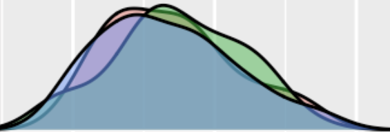

penguins %>%
ggplot(aes(y = species, x = body_mass_g, fill = ___)) +
geom_density_ridges()Two-Way ANOVA – A Brief Introduction
Two-way ANOVA
A two-way ANOVA extends the one-way ANOVA to situations with two categorical explanatory variables. This new methods allows researchers to simultaneously study two variables that might explain variability in the responses and explore whether the impacts of one explanatory variable change depending on the level of the other explanatory variable.
In a clinical trials context, it is well known that certain factors can change the performance of certain drugs. For example, different dosages of a drug might have different benefits or side-effects on men, versus women or children or even for different age groups in adults. When the impact of one factor on the response changes depending on the level of another factor, we say that the two explanatory variables interact.
It is also possible for both explanatory variables to be related to differences in the mean responses and not interact. For example, suppose there are differences in how younger and older subjects respond to a drug, and there are differences in how all individuals respond to different dosages of a drug, but the effect of increasing the dosage is the same for both young and old subjects. This is an example of what is called an additive type of model.
In general, the world is more complicated than the single factor models we’ve considered, especially in observational studies, so these models allow us to start to handle more realistic situations.
Visualizing a Two-Way ANOVA
The visualizations we created for a one-way ANOVA are still relevant here, but we need to figure out how to add a second categorical explanatory variable to our plots.
Similar to the multivariate plots we’ve talked about previously, there are two main ways to add a second categorical variable to our plots:
- colors
- facets
We’ll explore both below!
Below is a plot of the relationship between body mass and species for penguins in the Palmer Archipelago.
The year the data were collected was modified to a categorical variable, named year_cat. Change to code below to fill the density ridges with the year_cat variable.
ggplot(aes(y = species, x = body_mass_g, fill = year_cat)) Now, take the same plot and instead of coloring by year_cat use facets to separate the different sampling years.
penguins %>%
ggplot(aes(y = species, x = body_mass_g)) +
geom_density_ridges() +
___Hint: Add ~ year_cat to facet_wrap() to create year facets.
penguins %>%
ggplot(aes(y = species, x = body_mass_g)) +
geom_density_ridges() +
facet_wrap(~ year_cat)Additive versus Interactive Models
As was mentioned in the Introduction, there are two different types of two-way ANOVA models. Similar to a multiple linear regression, the two explanatory variables could have their own impact on the response (similar to a parallel slopes regression model). Or, the relationship between one explanatory variable and the response could differ based on another explanatory variable (similar to a different slopes regression model).
These two types of models are called an additive two-way ANOVA model or an interaction two-way ANOVA model. Similar to how we decided which model to choose in a multiple linear regression, we will use visualizations to guide us.
When deciding if an interaction model is a good fit for the data, we look to see if the relationship between one categorical variable and the response differs based on the level of the other response variable.
Here, we look at the relationship between year and body_mass_g and see if it differs based on the species of the penguin. To me, the easiest way to assess if this is the case is to fill the density plots with color for the different years:

Now that I have the plot, I compare the “profile” of the density ridges (the combo of the pink, green, and blue) between the species. If the relationship between year and body_mass_g changed based on the species, then we would see very different profiles. Note, I’m not paying attention to where the profiles are located along the x-axis, I’m simply looking at the density ridges as individual pictures to be compared.



Looking at the profiles above, removed from the context of the plot, does it seem that these profiles very similar? Or does it seem that these are different pictures? I didn’t think so, since it seems like in all three pictures there is about the same overlap between the three colors. However, we can use a two-way ANOVA interaction model to see if my intuition is right.
Conditions of a Two-Way ANOVA Model
The two-way ANOVA model has the same conditions as its one-way counterpart, however, we now have one more variable to construct our groups from.
Independence
For both categorical variables:
observations across groups need to be independent
observations within each group need to be independent
Equal Variance: the variability of each group is similar to the others.
Intersectional groups
This is an assumption about the groups at the intersection of each categorical variable (e.g. Gentoo penguins captured in 2007). This assumption is fairly robust, but large differences in variability will cause issues.
Normal Distribution: the responses of each group need to be approximately Normal.
Intersectional distributions
This is an assumption about the groups at the intersection of each categorical variable (e.g. Gentoo penguins captured in 2007). This assumption is also fairly robust, but influential outliers and the sample sizes of the groups should be noted when assessing.
Your turn!

Fitting a Two-Way ANOVA Model
The R code to fit a two-way ANOVA model is very similar to a one-way ANOVA model. We use the aov() (analysis of variance) function, but now we will have two categorical explanatory variables.
First, we’ll fit an interaction two-way ANOVA model to see if the relationship between year and body mass differs based on species of penguins.
- Similar to different slopes model,
*is the symbol we use to fit an interaction model.
aov(body_mass_g ~ species * year_cat,
data = penguins) %>%
tidy()# A tibble: 4 × 6
term df sumsq meansq statistic p.value
<chr> <dbl> <dbl> <dbl> <dbl> <dbl>
1 species 2 146864214. 73432107. 340. 3.16e-81
2 year_cat 2 26661. 13330. 0.0618 9.40e- 1
3 species:year_cat 4 575055. 143764. 0.666 6.16e- 1
4 Residuals 333 71841768. 215741. NA NA We notice that the interaction line (species:year_cat) has a small F-statistic 0.666 and a large p-value 0.616. This would lead for us to conclude that there is not an interaction between these two variables, or that the relationship between the mean body mass and year does not differ based on penguin species. As suspected!
An additive model seems like a better choice. Modify the code from the interaction model to fit an additive model instead.
aov(body_mass_g ~ species * year_cat, data = penguins) %>%
tidy()Hint: We used a + sign to fit an additive model with regression!
aov(body_mass_g ~ species + year_cat, data = penguins) %>%
tidy()Based on the ANOVA table above, what would you conclude for the relationship between body mass and species and the relationship between body mass and sampling year?
Model Conclusions
In this context, the ANOVA table allows for use to test two hypotheses:
- whether the mean body mass for every year are equal
- whether the mean body mass for every species are equal
Again, similar to a multiple regression, the interpretation of these tests is conditional on the other variable in the model.
Based on the ANOVA table below, with a p-value of 0.94 at an \(\alpha\) of 0.05, we would conclude that, after accounting for the species of penguin, there is insufficient evidence that at least one year of capture has a different mean body mass.
# A tibble: 3 × 6
term df sumsq meansq statistic p.value
<chr> <dbl> <dbl> <dbl> <dbl> <dbl>
1 species 2 146864214. 73432107. 342. 8.40e-82
2 year_cat 2 26661. 13330. 0.0620 9.40e- 1
3 Residuals 337 72416822. 214887. NA NA Submit a screenshot of the final page of this tutorial to both the Week 10 Reading Guide and R tutorial assignments!